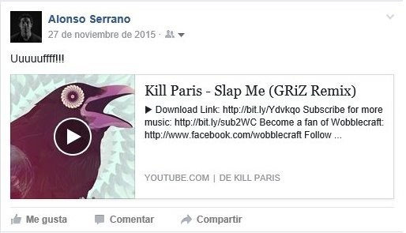
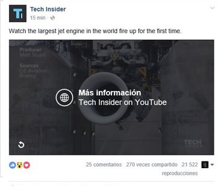

Reproducción
La principal ventaja del reproductor de Facebook es que los videos se reproducen automáticamente cuando la gente los encuentra en su news feed. Esto ayuda a atrapar al público, pero ten en cuenta que no tendrá sonido hasta que lo abran en pantalla completa, así que los visuales tienen que ser atractivos. Sobre todo en los primeros segundos.
Pro tip: puedes poner subtítulos o la letra de la canción. Esto ayuda a que activen el sonido o al menos lo vean más tiempo.
Si usas YouTube, tu publicación se va a ver así:
No tiene reproducción automática. La gente tiene que abrirlo. Si están en un dispositivo móvil (lo más probable), esto los lleva a una pestaña fuera del news feed: not bueno. Si están en una compu, no es un problema porque el video se abre dentro de Facebook e incluso pueden seguir scrolleando mientras escuchan tu música.
Pro tip: Revisa que cuando pegues el link se convierta al formato del ejemplo antes de publicar o no vas a tener ni thumbnail ni título.
Botones
Si usas Facebook, puedes poner un botón (call to action) al final del video y escoger su función. Puedes usarlo para tratar de vender o regalar la canción, por ejemplo.
Con YouTube tienes más opciones, aunque la mayoría relacionadas a YouTube: puedes poner botones para que se suscriban a tu canal, para que vean otros videos tuyos o para que vayan a tu SoundCloud o Bandcamp. (Lee nuestra entrada YouTube para músicos)
Calidad
La compresión que usa Facebook reduce la calidad considerablemente. La mayoría de la gente seguro no lo notará, especialmente en un dispositivo móvil, pero duele perder calidad cuando se trata de tu proyecto. Está el botón de HD, pero casi todo el mundo ve los videos en la calidad predeterminada. YouTube es YouTube y puedes tener hasta 4K si quieres.
Búsqueda
Pensando más a largo plazo, te conviene tener tu video en YouTube. Nadie entra a Facebook a buscar videos. Después de unos días, un video de Facebook está en el olvido y si quieres encontrarlo, más te vale recordar quién lo publicó y en qué fecha, porque su motor de búsqueda es bastante malo.
“En YouTube, buscas videos. En Facebook, los videos te encuentran.”
-Mozart-
Pro tip: Independientemente del reproductor que uses para una publicación, sube tu video a YouTube para hacerlo más fácil de encontrar.
Vimeo
Así es. Hay una opción C. Vimeo es el reproductor favorito de hipsters y cineastas por muchas razones. Un post de Vimeo en Facebook se ve así:
No tiene reproducción automática como los videos de Facebook, pero el thumbnail es más prominente que los de YouTube.
Si estás en una compu y das click, se reproduce en el mismo news feed. Si estás en un dispositivo móvil, se abre en una nueva ventana.
Puedes agregar botones a links o a otros videos dentro de Vimeo.
A diferencia de YouTube, Vimeo nunca tendrá anuncios (aunque para que YouTube ponga anuncios en tus videos, te tiene que pagar: Cómo ganar dinero con views de YouTube).
El principal problema de Vimeo es la cantidad de usuarios. YouTube lo aplasta. La comunidad de Vimeo es más pequeña, pero también más… refinada.
Donde Vimeo realmente brilla es cuando, en lugar de compartir el link, haces un embedding del video en una página. Ahí puedes personalizar desde el color de los botones hasta quién y en dónde puede ver tu video. Si vas a usar Vimeo a menudo, quizá te convenga su servicio pagado.
En conclusión
El problema es que Facebook, aunque es posiblemente la mejor plataforma de difusión, no es una plataforma para reproducir música. Es raro que alguien se detenga por cuatro minutos a escuchar una canción completa a menos que el video sea muy muy bueno.
Recuerda esto: Facebook es para difusión, no para reproducción. Tú sabes cuál es el lugar ideal para que la gente escuche tu música. Puede ser en vivo, en tu página de internet, en SoundCloud o en su ipod. Tu trabajo es usar Facebook para llevar ahí a la gente.
Esperamos que te sirvan estos tips. Si quieres ver más artículos como éste, síguenos en Facebook o suscríbete a nuestra mailing list. Te enviaremos contenido exclusivo e invitaciones a los eventos de Nostromo.